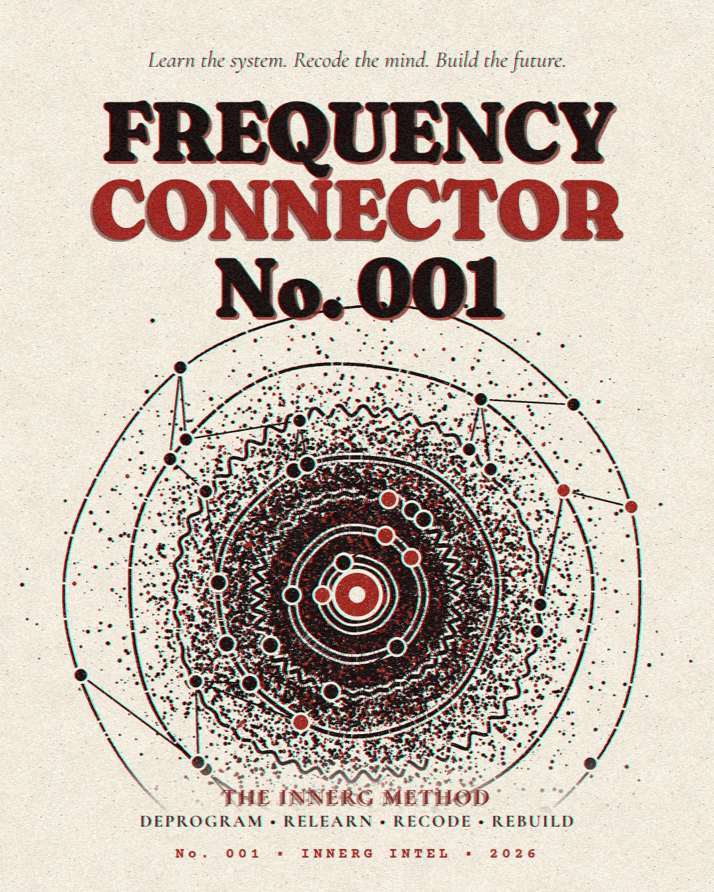

Deprogram. Relearn. Recode. Rebuild.
The INNERG method in plain words: four steps that take you from awareness to ownership. Free, from INNERG INTEL.
A free guide for you and a free skill for your agent. No sign-up and no payment.

Learn the system. Recode the mind. Build the future.
INNERG INTEL helps you understand yourself, understand the world around you, and build things that are yours. The method has four steps. You can do them in order, again and again.
1. DEPROGRAM ~ notice
Look at what you believe and do without thinking. Ask: who taught me this, and does it still help me?
2. RELEARN ~ learn
Learn how things really work: money, technology, the world around you. Listen to more than one side.
3. RECODE ~ practice
Turn what you learned into new habits. Choose on purpose instead of on autopilot.
4. REBUILD ~ make
Use what you know to build something real: a project, a business, a skill, something your family and community can keep.
The path in four words: Awareness, Understanding, Application, Ownership.
Use it today
- Pick one habit or belief. Write down where it came from. (DEPROGRAM)
- Learn one new thing about how money or technology works. (RELEARN)
- Make one choice today on purpose, not out of habit. (RECODE)
- Start or improve one small thing you own. (REBUILD)
One rule to remember
INNERG INTEL is not here to give you all the answers. It is here to help you learn to find them yourself. The same goes for superintelligence: use it as a tool, keep thinking for yourself.
Stay up to date
Each Frequency Connector carries a number, a version and a "last updated" date. When a new version comes out, the date changes. This is No. 001, version 1.0, last updated 2026-10-31, published 2026-11-26.
For your agent
Every Frequency Connector has two sides: this page for you, and a skill for your agent. Install the skill once and your agent works with the same ideas.
Download the skill (.zip) Open SKILL.md
- In Claude, open Customize, then Skills, click +, choose Create skill, then Upload a skill, and pick the zip. Do not unzip it.
- In Grok, ChatGPT or another agent, paste the contents of SKILL.md into your custom instructions, or at the start of a chat.
Or let your agent do it. Copy this and paste it in.
I want the free INNERG Frequency Connector No. 001, The INNERG Method. Open https://innergclaw.github.io/nas-hub/frequency-connectors/no-001-innerg-method/ , download the skill, and help me install it. Then use it when I ask about changing a habit, learning a system or building something I own.